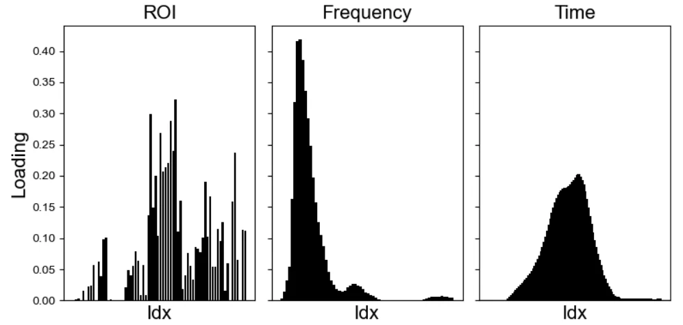
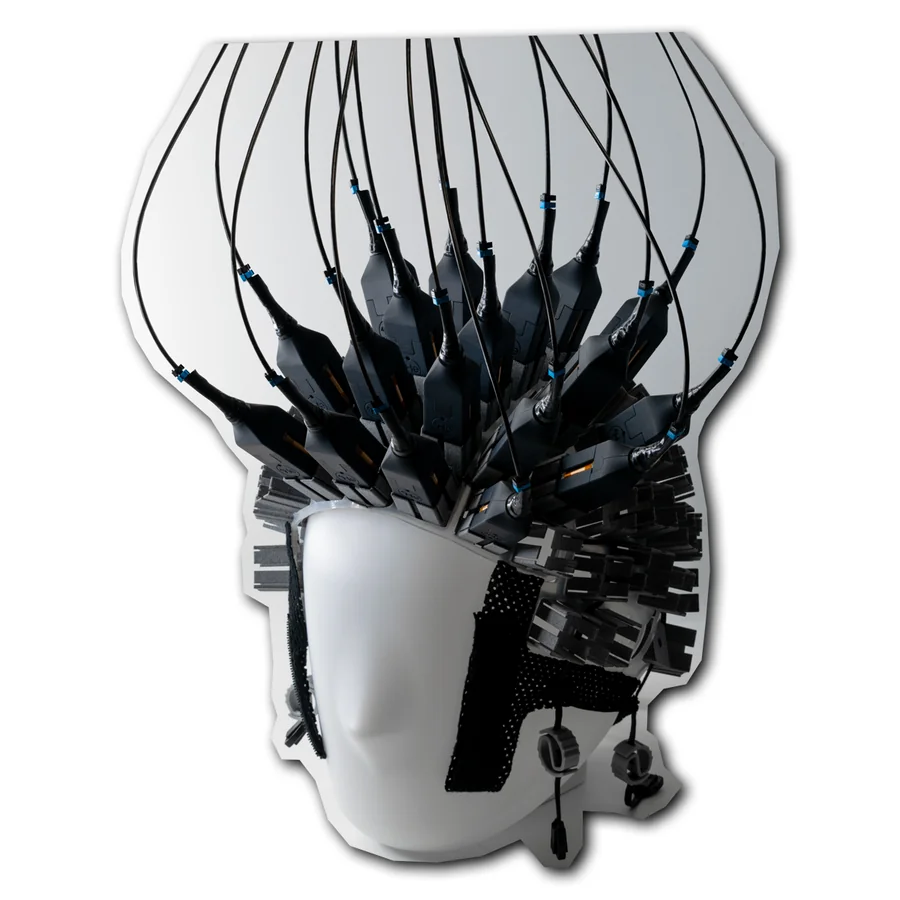
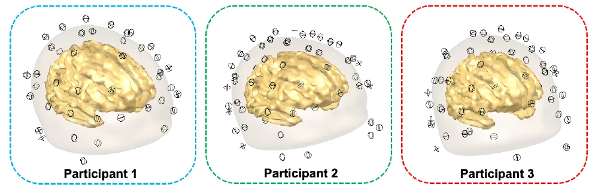
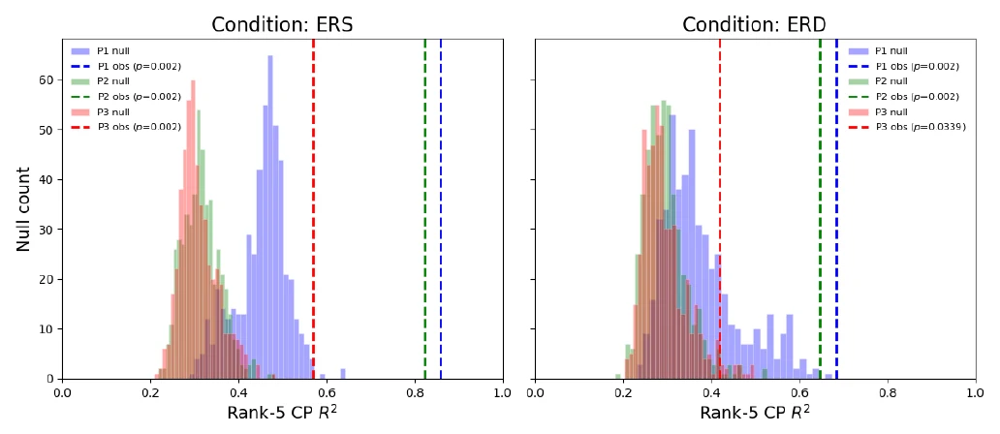
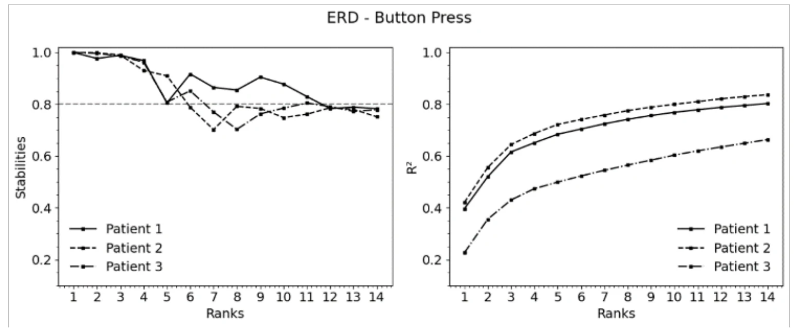
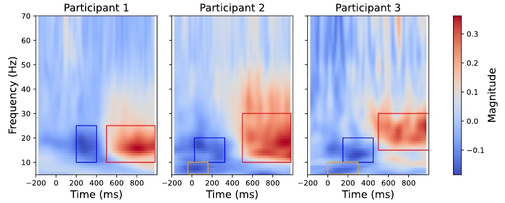
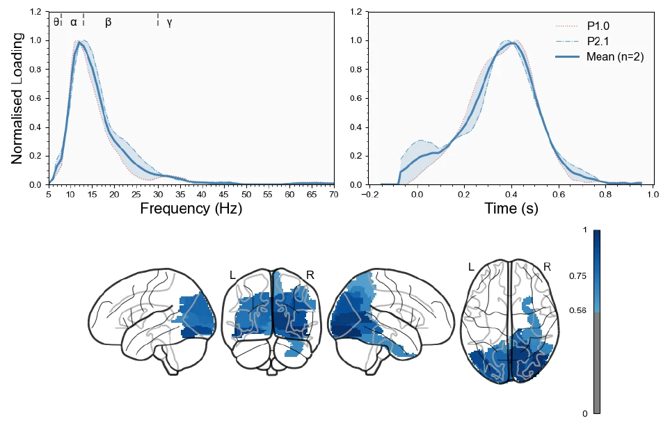
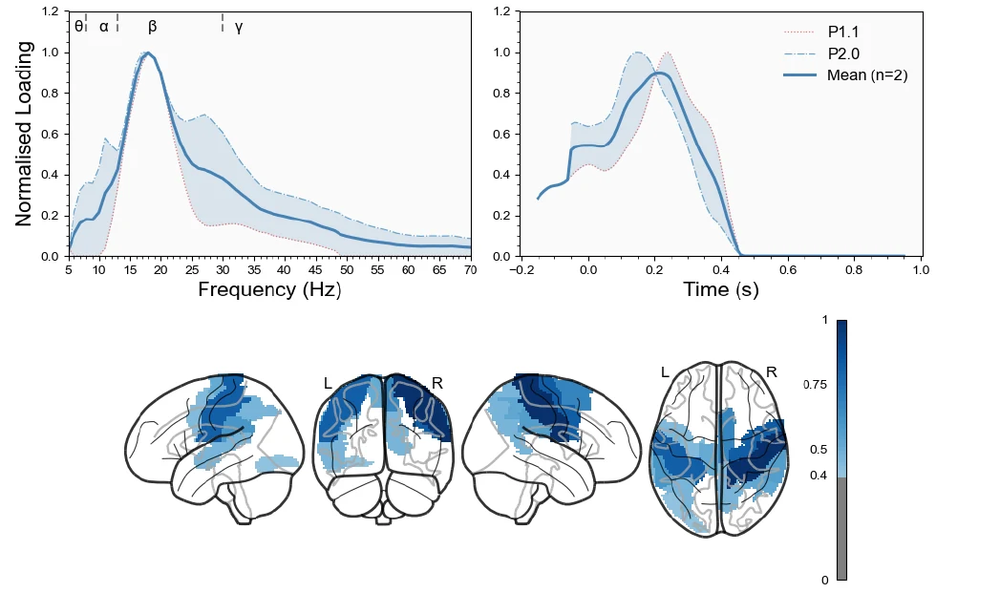
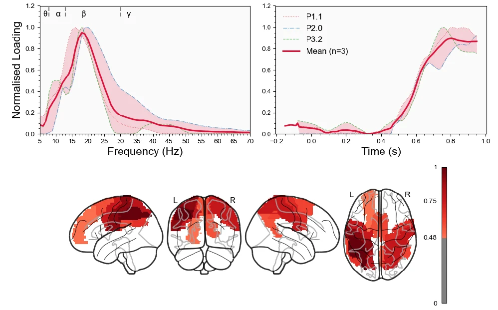
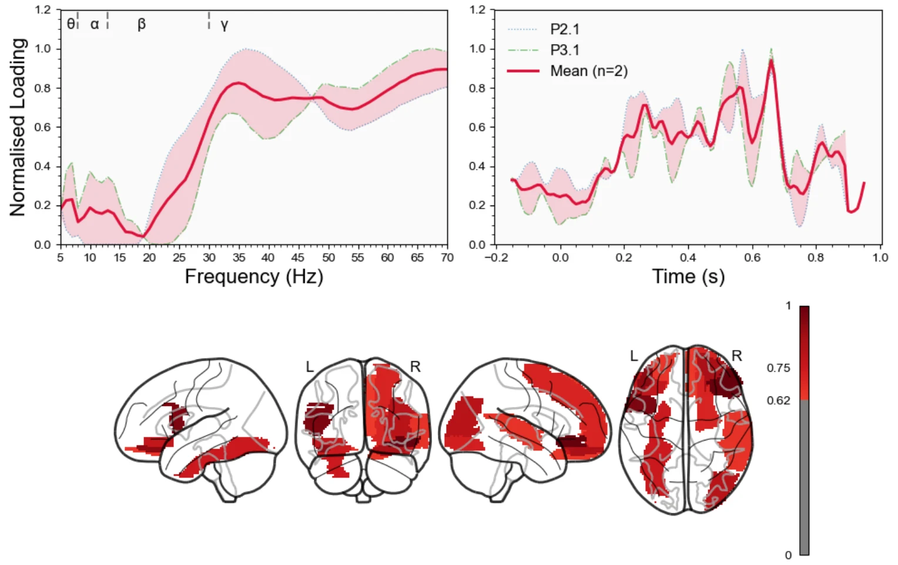

Abstract
Optically Pumped Magnetometer magnetoencephalography (OP-MEG) enables flexible, close-to-scalp recordings unlocking access to new patient cohorts and naturalistic paradigms. The data collected during OP-MEG sessions is naturally multi-dimensional, often containing information across patients, trials, conditions, space, frequency and time which can be stored in tensors. Canonical polyadic decomposition (CPD) is an unsupervised method that separates multidimensional data into components with linked spatial, spectral and temporal profiles. This allows neural responses to be characterised across brain regions, frequency and time simultaneously, without specifying these features in advance. This makes CPD well suited to OP-MEG data, where signals naturally vary across these dimensions.
Here, we applied CPD to whole-brain, source-reconstructed OP-MEG data from three participants with epilepsy during a simple visuomotor task, modelling neural activity jointly across brain regions, frequency and time. We split these subject-specific tensors into event-related power decrease and increase (referred to as ERD and ERS for convenience) tensors so that a more interpretable and computationally efficient non-negative CPD variant could be applied. CPD paired with consensus clustering on spatio-spectral-temporal networks successfully identified cross-patient, simultaneous motor beta and visual alpha suppression. Permutation-based null distribution tests were used to exclude tensors that lacked significant low-rank structure. These findings demonstrate the applicability of tensor decompositions to electrophysiological data as the pipeline recovers canonical visuomotor responses without prespecifying region, band or latency.
Why tensors?
Conventional M/EEG analyses fix the region, frequency band and latency of interest in advance. That works when you already know what you are looking for, which is rarely the case in exploratory, naturalistic or clinical work.
Matrix methods such as PCA or HMMs avoid that choice, but they need the data flattened first, so region, frequency and time are mixed together before the model ever sees them. Canonical polyadic decomposition keeps the three dimensions separate and estimates them jointly. Each component is one pattern described by where it happens, at what frequency, and when:
Under established conditions CPD is essentially unique up to order and scale, so each component keeps a consistent spatial, spectral and temporal interpretation that can be compared across participants.

Method
Five steps, matching panels A–E of the pipeline figure. The full rationale for every choice is in docs/pipeline.md.
-
A
Record and source-reconstruct
Each participant wore a helmet 3D-printed from their own MRI, holding 23–25 triaxial and 28–34 dual-axis QuSpin sensors for whole-head coverage. Recordings were made during the visuomotor part of a reward-learning task and epoched around each choice button press.
After filtering and Adaptive Multipole Modelling to suppress environmental noise, an LCMV beamformer projected the sensor data onto a 5 mm grid, warped to MNI space and summarised in 70 cortical AAL2 regions. Because every participant lands in the same atlas, different sensor layouts stop mattering.

A 3D-printed OP-MEG helmet with sensors fitted. 
Sensor layouts for participants 1–3. Each individually designed helmet gives whole-head coverage. -
B
Build a region × frequency × time tensor
Wavelet convolution gives power in 1 Hz bins from 4–70 Hz every 10 ms. Trials are trimmed to −200 to +1000 ms, log-baselined and averaged into the induced response, giving one third-order tensor per participant. Each tensor is then split into its power increases (ERS) and decreases (ERD), so both can be modelled with non-negative factors that never cancel each other out:
$$\mathcal{X}_{\text{ERS}} = \max(\mathcal{X}, 0), \qquad \mathcal{X}_{\text{ERD}} = \lvert \min(\mathcal{X}, 0) \rvert$$ -
C
Decompose with non-negative CPD
Each ERD and ERS tensor is fitted independently per participant by alternating least squares with non-negativity on every mode, $\mathcal{X} \approx [\![\mathbf{A}, \mathbf{B}, \mathbf{C}]\!]$. The rank was fixed at $R = 3$: the highest rank that stayed stable across 30 random restarts in every participant, near the elbow of variance explained. Decomposing participants separately, instead of stacking them, means a pattern does not have to exist in everyone.
-
D
Test against a permutation null
To check that a tensor really holds task-locked low-rank structure, each trial is circularly shifted in time at random (500 times), which breaks alignment to the button press but keeps spectral and spatial covariance. The shifted trials are re-averaged and decomposed at the same rank. The observed $R^2$ is compared with this null.
-
E
Match components across participants
CPD components come out in arbitrary order, so they have to be aligned before they can be compared. Similarity between two components is the product of their per-mode similarities, so a match must agree in space, frequency and time:
$$S_{\text{Network}} = S_{\text{ROI}} \odot S_{\text{Frequency}} \odot S_{\text{Time}}$$$S_{\text{ROI}}$ and $S_{\text{Frequency}}$ are cosine similarities. $S_{\text{Time}}$ is the peak normalised cross-correlation within ±100 ms, which tolerates latency differences between people. Clusters come from an exact integer program (threshold 0.6, at most one component per participant per cluster), and their stability is measured by re-solving under 500 small perturbations.
Statistical details: null distributions and rank selection


Results
Averaging over the cortex blurs the picture
Time–frequency maps averaged over all 70 regions show beta ERD and later ERS in every participant, but alpha ERD is hard to see in participant 1. Averaging throws away where things happen. The decomposition keeps spatial specificity alongside spectral and temporal precision, and recovers the alpha response anyway.

Clusters recovered across participants
Each tab shows a cluster's mean spectral and temporal loadings (range across members shaded) and the top 20% of regions by loading.

- Participants
- 1, 2
- Band
- α, 7–13 Hz
- Peak latency
- ≈ 300 ms
- Stability
- 1.0
- Loaded on visual parcels in both participants. No non-visual region entered the ten highest loadings in either.
- Participant 2 was roughly symmetric over medial and dorsal occipital cortex. Participant 1 was right-lateralised over ventral and lateral occipital cortex.
- Loading spread over more than ten parcels, as expected for alpha, which is spatially less discrete than beta.

- Participants
- 1, 2
- Band
- β, 14–30 Hz (peak ≈ 18 Hz)
- Peak latency
- 0–250 ms
- Stability
- 0.52
- Strongest loadings on postcentral gyrus (0.29 and 0.33), matching reports of movement-related beta ERD in the hand region.
- The frequency estimate is the spectral loading itself, with no separate band-selection step.
- Temporal profiles were already suppressed in the baseline window, which overlaps pre-movement desynchronisation, so ERD magnitude and onset are compressed.

- Participants
- 1, 2, 3
- Band
- β, 14–30 Hz (peak 15–20 Hz)
- Peak latency
- > 500 ms
- Stability
- 0.67, 0.82
- Loaded on left precentral and postcentral gyrus in all three participants, contralateral to the button press.
- Rose from about 400 ms, consistent with the post-movement beta rebound.
- Shifted anterior relative to the postcentral-dominant ERD cluster, in the direction reported in cryogenic MEG.

- Participants
- 2, 3
- Band
- γ, > 30 Hz
- Timing
- ≈ 5–10 Hz fluctuations from ≈ 200 ms
- Stability
- 0.87
- Spatially inconsistent: visual cortex in participant 2, frontal regions (with added theta power) in participant 3.
- The periodic gamma envelope is consistent with phase–amplitude coupling, but confirming it would need a direct coupling measure on the source time series.
Cluster inventory
| Cluster | Tensor | Participants | Band | Peak latency | Dominant regions | Stability |
|---|---|---|---|---|---|---|
| Occipital alpha desynchronisation | ERD | 1, 2 | α 7–13 Hz | ≈ 300 ms | Occipital and visual cortex | 1.0 |
| Peri-movement beta desynchronisation | ERD | 1, 2 | β 14–30 Hz | 0–250 ms | Sensorimotor | 0.52 |
| Late beta synchronisation | ERS | 1, 2, 3 | β 14–30 Hz | > 500 ms | Frontal and sensorimotor | 0.67, 0.82 |
| Broad oscillatory gamma synchronisation | ERS | 2, 3 | γ > 30 Hz | ≈ 10 Hz oscillations > 200 ms | Frontal and visual | 0.87 |
Permutation tests
| Participant | Tensor | $R^2$ | $\hat p$ | $\tilde p$ (Bonferroni) |
|---|---|---|---|---|
| P1 | ERS | 0.86 | ≤ 0.002 | 0.012 |
| P1 | ERD | 0.68 | ≤ 0.002 | 0.012 |
| P2 | ERS | 0.82 | ≤ 0.002 | 0.012 |
| P2 | ERD | 0.65 | ≤ 0.002 | 0.012 |
| P3 | ERS | 0.57 | ≤ 0.002 | 0.012 |
| P3 | ERD | 0.42 | 0.034 | 0.204 |
P3 ERD did not survive correction (low trial count) and was excluded from clustering.
Use the code
opm-cp is a small Python package covering tensor construction, non-negative CPD with rank selection,
cross-subject similarity and consensus clustering. The worked notebook runs the whole pipeline on simulated data with
known ground truth, so it works from a fresh clone. Nothing in it is OPM-specific: any signed region × frequency × time
tensor works.
git clone https://github.com/hug0-w/OPM-MEG-cp-pipeline.git
cd OPM-MEG-cp-pipeline
pip install -e ".[all]"import opm_cp as cp
from opm_cp import simulate
# Load and prepare (on real data: cp.load_tensor instead of simulate_dataset)
loaded = simulate.simulate_dataset(subjects=(1, 2, 3))
ds = cp.build_dataset(loaded, keep_patterns=['precentral', 'occipital'], n_crop=5)
# Decompose each subject independently, ERS and ERD separately
cp_models, factors = cp.decompose_dataset(ds, rank=3, n_runs=25)
# Match components across subjects and cluster them, once per type
for kind in ('ERS', 'ERD'):
components = cp.build_component_set(factors[kind], subjects=ds.subjects, rank=3)
sim = cp.compute_similarity(components, dt_ms=ds.dt_ms, lag_ms=150)
M, clusters, stability = cp.consensus_clustering(sim, threshold=0.5)Limitations
- Three participants. This is a feasibility demonstration: each recording is a separate replication of the pipeline, not a sample for group-level inference.
- Fixed modelling choices. Rank was fixed at $R = 3$, tensors are trial-averaged, and the beamformer, regularisation and atlas all shape what is found. There is no simulated ground truth in the paper.
- ERD and ERS are fitted separately. This allows non-negative factors but means coupled patterns, such as beta ERD and its later rebound, appear as separate components.
Citation
@article{wharton2026tensor,
title = {Tensor decomposition for data-driven analysis of {OP-MEG}: a feasibility study},
author = {Wharton, Hugo and Ramaswamy, Arjun and Mellor, Stephanie and Puvvada, Sahitya and
Walker, Matthew and Bush, Daniel and Tierney, Tim and Vivekananda, Umesh and
Sadrzadeh, Mehrnoosh},
journal = {bioRxiv},
year = {2026},
doi = {10.64898/2026.11.20.766579},
note = {Preprint}
}